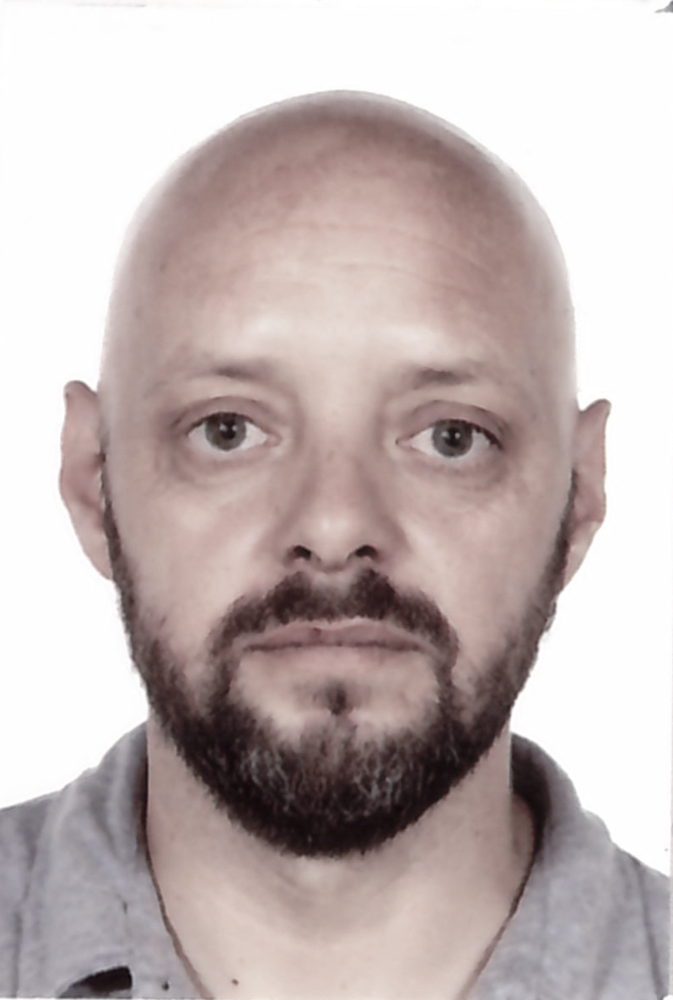
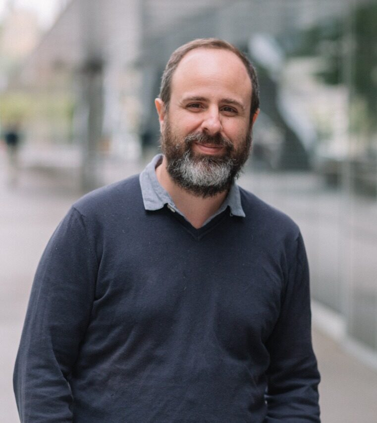
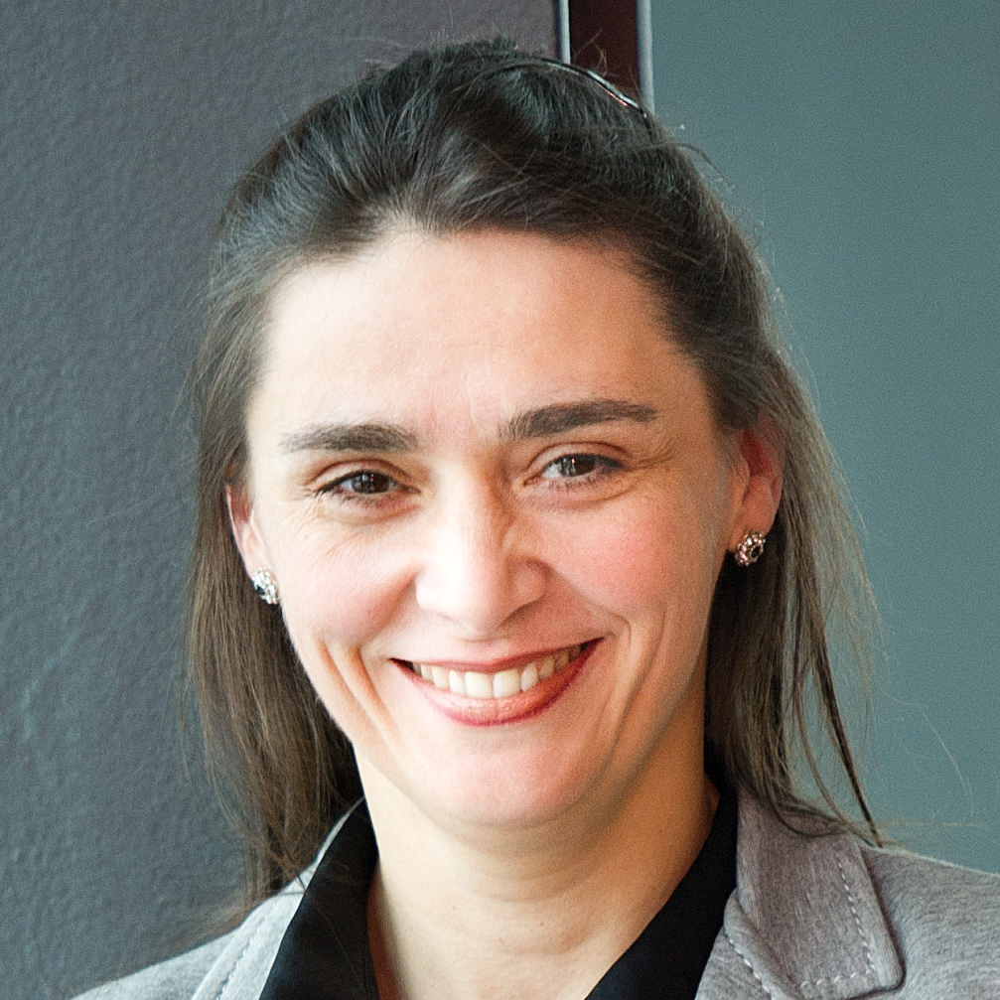

CONICET and Universidad Nacional de Río Cuarto, Argentina
Guangdong Technion-Israel Institute of Technology, China
Nazareno Aguirre is a Full Professor at the University of Rio Cuarto, Argentina, and a Research Scientist at Argentina's National Council for Scientific and Technical Research (CONICET). He is also a Visiting Professor at Guangdong Technion Israel Institute of Technology, Shantou, China. His current research interests relate to the problem of guaranteeing software correctness and helping produce quality software, mostly via techniques for program specification, automated testing, and program verification, with formal underpinnings. Nazareno Aguirre's research has been published in top-tier software engineering conferences and journals. He regularly serves on program committees of premier software engineering conferences and is currently an Associate Editor of IEEE Transactions on Software Engineering.
Automated Inference of Assertion-Based Formal Specifications
Analyzing software reliability requires a formal specification of the intended behavior of the software under analysis. Unfortunately, software many times lacks such specifications, and thus inferring them from existing software elements such as source code, code comments, or program executions, is important, as it can facilitate more effective software analysis. In this talk I will describe some current attempts to infer specifications at the level of source code, in the form of program assertions. I will present techniques based on dynamic analysis, that are able to produce program assertions based on three main tasks: (i) executing the program under analysis to obtain samples of the current program behavior, (ii) applying program/state mutation to get samples that deviate from the program behavior, and (iii) employing some generation approach to produce assertions capturing the “valid” program executions, while rejecting the “deviating” ones. The techniques differ on how these three components are realized and composed, and in particular, in the approach used for assertion generation; evolutionary search and fuzzing are two specific mechanisms that have been recently explored for this latter task. Finally, I will discuss some approaches related to specification inference, and current lines of research in this area.

Universidad Católica de Chile
Full Professor at Pontificia Universidad Católica de Chile, where he also acts as Director of the Institute for Mathematical and Computational Engineering. Ph.D. in Computer Science from the University of Toronto, Canada. Recently, he served as Deputy Director of the Millennium Institute for Foundational Research on Data (IMFD Chile). He is the author of more than 80 technical papers, has chaired ICDT 2019 and ACM PODS 2022, and is currently a member of the editorial committee of Logical Methods in Computer Science. From 2011 to 2014 he was the editor of the database theory column of SIGMOD Record. His areas of interest are database theory, logic in computer science, and the emerging relationship between these areas and machine learning.
The Role of Logic in Advancing Machine Learning: Three Case Studies
I present three case studies from my collaborative research that highlight the essential role of logic in enhancing our understanding of modern machine learning architectures. The first two examples focus on the expressive capabilities of two prominent architectures: Transformers, which have revolutionized NLP applications, and Graph Neural Networks, a leading approach for classifying graph-structured data. We employ temporal logic techniques to analyze the properties that Transformers can recognize, and modal logics to examine the properties discernible by Graph Neural Networks. The third example addresses the pursuit of explainable AI, demonstrating how first-order logic can be used to design languages that declare, evaluate, and compute explanations for decisions made by machine learning models.

RWTH Aachen University
Erika Abraham graduated at the Christian-Albrechts-University Kiel (Germany), and received her PhD from the University of Leiden (The Netherlands) for her work on the development and application of deductive proof systems for concurrent programs. Then she moved to the Albert-Ludwigs-University Freiburg (Germany), where she started to work on the development and application of SAT and SMT solvers. Currently she is professor at RWTH Aachen University (Germany), with main research focus on SMT solving for real and integer arithmetic, and formal methods for probabilistic and hybrid systems.
To Be Announced